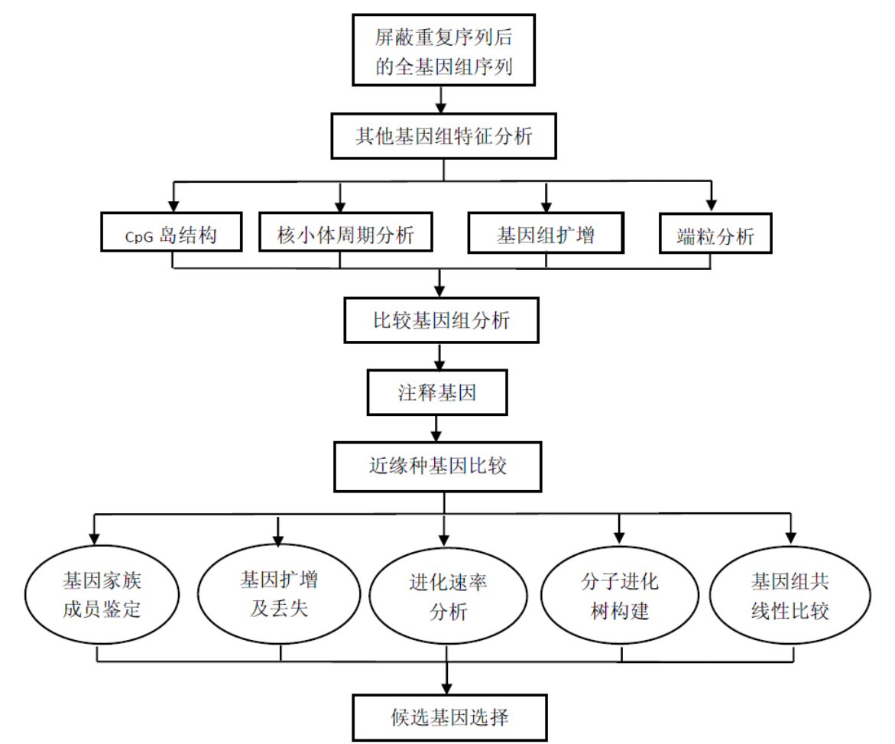

基因组拼接评估
- 拼接长度：N50/N90
- 拼接正确性：BAC、Fosmid
- 基因组覆盖度：reads、拼接饱和曲线
- 基因区完整性：EST/cDNA、RNA_seq
- 保守基因覆盖度：CEGMA(Core Eukaryotic Genes Mapping Approach)
BUSCO(Benchmarking Universal Single-copy Orthologs)
重复序列注释流程
基于序列同源比对法：Repeatmasker
从头预测法： RepeatModer、Repeatscout、Piler
LTR预测：LTR harvest 、LTR-finder
TE预测：TEclass
基因结构及功能注释技术路线
基因组ncRNA注释
常规ncRNA：
- Rfam（http://rfam.xfam.org/，rfam_scan.pl ）
- tRNA （tRNAscan-SE）
- snoScan 识别带 C/D 盒的 snoRNAs
- SnoGps 识别带 H/ACA 盒的 snoRNAs
- miRNA （http://www.mirbase.org/，mirScan）
- rRNA 同源比对
大片段扩增与基因重复
编码蛋白预测与功能注释
基因注释
MEROPS - 蛋白酶、蛋白酶作用基质及抑制因子信息的整合资源数据库
层级分类：蛋白组分（protein species）、家族（family）、氏族（clan）
数据库根据催化类型的不同将蛋白酶分为 9 大类：
1）天冬氨酸类（Aspartic，A）
2）半胱氨酸类（Cysteine，C）
3）谷氨酸类（Glutamic，G）
4）金属类（Metallo，M)
5）天冬酰胺类（Asparagine，N）
6）混合类（Mixed，P）
7）丝氨酸类（Serine S）
8）苏氨酸类（Threonine T）
9）未知催化类型的未知类（Unknown U）
CAZy - 碳水化合物酶家族分类数据库
基于测序数据，有功能注释和3D结构信息。提供在线检索。
根据酶的作用类型，将碳水化合物活性酶分成 6 大类：
- 参与糖苷键水解或重排的糖苷水解酶类（GHs)
- 参与糖苷键形成的糖基转移酶类（GTs)
- 参与糖苷键的非水解分裂反应的多糖裂解酶类（PLs）
- 参与碳水化合物脂类水解作用的碳水化合物酯酶类（CEs）
- 与其他酶类共同作用的辅助活性氧化还原酶类（AAs）
- 碳水化合物绑定模块（CBMs)，其结构中不具有催化模块，常粘附于其他酶类产生作用。
基因家族进化分析及比较生物学分析技术路线

基因组共线性分析
核苷酸水平：lastz、Mummer
基因水平：蛋白序列-blast-同源基因-顺序一致性-共线性block区域
基因家族
直系同源（Orthologs）和旁系同源（Paralogs）
基因家族聚类比较分析
进化分析